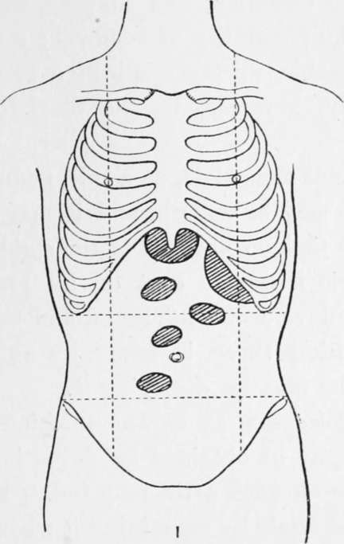
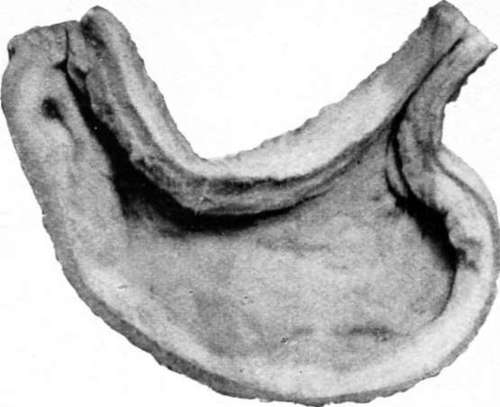
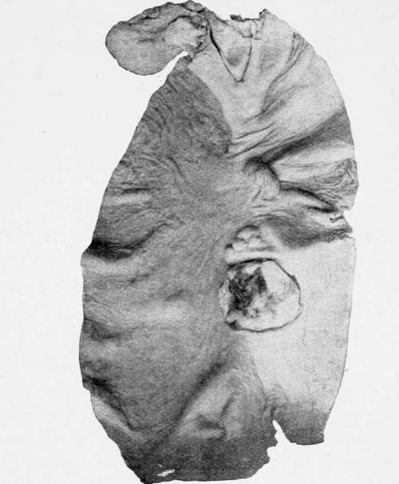

Ulcus Carcinomatosum. Part 3
Description
This section is from the book "Cancer Of The Stomach", by A. W. Mayo Robson, D.Sc, F.R.C.S.. Also available from Amazon: Cancer of the Stomach.
Ulcus Carcinomatosum. Part 3
We should be able to make our diagnosis (if needful by an exploratory operation) before a tumour can be felt, if we want to obtain the best results from the surgical treatment of gastric carcinoma.
Inspection will often reveal a tumour if present, and in more than half of the cases I have observed, the tumour has been seen visibly moving up and down during respiration. After manipulation, inspection will frequently reveal visible peristalsis in a stomach dilated from obstruction at the pylorus, or in the proximal portion of a cancerous hour-glass stomach.
Fig. 5.-Various positions in which tumour may be felt in cancer of the stomach.
Palpation is of service, not only in discovering a tumour, but in estimating its mobility in a vertical or transverse direction, and helping to form some idea as to the possibility of removal; a tumour that is freely movable during respiration or under manipulation may, however, be too fixed for successful removal.
A malignant tumour is, as a rule, nodular and irregular, but it may be smooth, and it may vary in size from time to time on account of the rigid contraction of the gastric muscular coat on its proximal side; it is usually devoid of tenderness, and unlike inflammatory swelling there is generally an absence of rigidity of the muscles overlying it.
Much information as to the position and size of the tumour may be obtained by palpating the abdomen with the stomach artificially inflated by carbonic acid gas, and again by examining it when it has been emptied.
Although tumours of the stomach usually occupy the epigastrium, they may be found in any part of the abdomen, even in the pelvis. I have removed a pyloric tumour that could only be just felt beneath the left costal margin, and have also removed one that I could easily manipulate into every region of the abdomen.
Plate IV. Extremely small stomach dependent on neoplasm-'leather-bottle stomach.'
A tumour may be formed by an atrophic cancerous stomach (leather bottle stomach), in which the walls are thickened by cancerous infiltration and the lumen much diminished. A photograph of such a case from the Royal College of Surgeons Museum is shown.
This condition may be simulated by cirrhosis of the stomach, but the history is much longer in cirrhosis, though the symptoms may be almost identical, so similar is the appearance of the two conditions that a naked-eye inspection cannot always differentiate them, and, in fact, an examination by the microscope of several museum specimens labelled cancer has shown them to be simple in character.
In 54 per cent, of cases the tumour is at the pylorus, in 16 per cent, on the lesser curvature, in 9 per cent, at the cardiac end, in 3 per cent, on the anterior wall, in 4 per cent, on the posterior wall, in 4 per cent, on both walls, in 4 per cent, on the greater curvature, and in 6 per cent, it is diffuse (Lebert).
Enlargement of the supra-clavicular glands on the left side is important positive evidence of cancer of the stomach, and the sign may be present when an abdominal tumour is not to be felt; but the absence of this sign, as pointed out by Riegel, has no value as negative evidence.
The supra-clavicular glands on the left side are more frequently involved in cancer of the stomach than is generally supposed, and, as had been shown by Dr. Mitchell Stevens (British Medical Journal, February 9th, 1907), in many cases careful percussion will show the presence of glandular enlargement in the clavicular and infra-clavicular regions, and may thus give a clue to the nature of an abdominal disease. It is possible that these glands become infected through " regurgitation " of infected lymph conveyed by the thoracic duct from the site of disease, but more frequently infection occurs by direct communication of the disease along the walls of the thoracic duct extending along the lymph-vessels to the glands. The right clavicular glands are seldom affected.
Rarely the left axillary glands are enlarged, and left inguinal glandular enlargement has some value as a positive sign.
Ascites is not a common accompaniment of cancer of the stomach, and when present may obscure the other signs and lead to difficulties in diagnosis ; it usually occurs when the growth invades the serous coat and forms secondary deposits in the peritoneum; it is therefore a late sign and contra-indicates surgical treatment.
Perforation of the stomach from cancer is not a very rare complication. Brinton gives it as 3^ per cent., Osier says 4 per cent. In cancer, the perforation usually occurs slowly and leads to a local abscess, very rarely to acute perforative peritonitis, though I have seen a perforating carcinoma to present symptoms as acute as those o£ perforating peptic ulcer.
Perforation of tlie stomach due to sloughing cancer.
Metastases occur in 3 out of 4 cases according to Ewald, or according to Osier in 39 out of 45 cases. The largest number occurred in the lymph-glands- a total number of 30 ; and of these the gastro-hepatic were affected in 21, the peritoneal in 9, posterior mesenteric in 6, supra-clavicular and posterior mediastinal in 2, iliac, bronchial, pericardial, anterior mediastinal and axillary in 1 each. The liver was the seat of metastases in 23, peritoneum 11, pancreas 8, bowels 8 (small bowel 3, colon 2, duodenum 1), kidney and lungs each 4, pleura 3, spleen and diaphragm each 2, ribs, vertebras, skull, ilium, femur, heart-muscle, pericardium, abdominal wall, vesico-rectal cul-de-sac, hydrocele sac, and ureter each 1.
Metastasis along the round ligament extending to the umbilicus was noted by Wickham Legg, and has since been frequently observed ; I have seen it several times in late cases and have found it at operation undertaken at a time when it was hoped the disease might prove to be removable. It shows itself in the late condition as a hard cord extending to and involving the umbilicus, and this sign may be present when no tumour can be felt.
Continue to:
Tags
stomach, operation, cancer, tumour, ulcer, gastric, gastrectomy